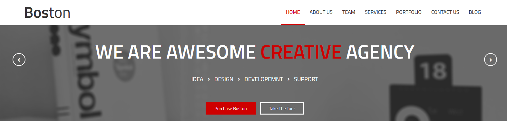
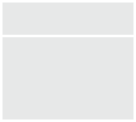
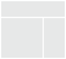
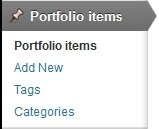

Boston
Wordpress Theme
- Created: 02/14/2014
- latest Update: 02/14/2014
- By: createIT
- themeforest.net/user/createit-pl/portfolio
- Email: office@createit.pl
Thank you for purchasing this theme. If you have any questions that are beyond the scope of this help file, please feel free to email via the user page contact form on this page. http://themeforest.net/user/createit-pl/portfolio Thanks so much!
Startup
Installation
The theme can be installed by uploading it to your server via ftp in wp-content/themes folder. Copy themes directory into wp-content/themes of your WordPress installation.
You can also use archive (zip file)
from the theme's folder (after you've unarchived the package you've downloaded from
Themeforest) and install it via Appearance > Themes > Install Themes tab. To use the theme you need to activate it.
Remember that you MUST install boston theme before any other flavour! Boston theme contains all required files, other themes are Child Themes only.
After installation you should see the following folder structure:
- assets
- css - theme stylesheets
- img - theme images
- js - theme javascripts
- docs - theme documentation
- framework - custom framework for WordPress Themes
- lang - .POT translation template file for theme
- templates - theme specific template files
- theme - theme specific files
Setting up Theme Options
Once your theme is installed you can start theme configuration
- Menu type
- Content
- Setting up Homepage
- Posts
- Set up menu
- Widgets
via Appearance / Theme Option / Style - Layoutt select menu type .
via Pages / Add new create page content - check out examples below:
Code
And result

To set up homepage you need to use Appearance / Theme Option / General - Pages (at least one page should be added via Pages / Add new). If you'd set up home page via Settings/Reading - Front page displays it wont' work properly.
via Appearance / Theme Option / General - Posts set up your blog page, where posts will be displayed.
via Appearance / Menus set up menu. To create Onepager follow this steps.
In multipage we recommend set up standard menu:
> add pages from the left side to your menu and select chceckbox "Primary Navigation" below.
Set up widgets to your page in section Appearance / Widgets. Drag and drop widget in section, in which you want it to appear, then set up widget options. To find out more about section check out widgetarea description. If you decide to exclude some widget, but you may want to use it in future, just drag it and drop in "Inactive Widgets" area. You won't lose your widget settings in that way.
1-Click Demo Import
You can easily configure theme to look exactly like on a demo page. Once theme is activated, navigate to Appearance > Theme Options > General > 1-Click Demo Import and click "import" button.
That's it - your site is now ready!
XML import
Please refer to 1-Click Demo Import section to automatically setup Wordpress installation. All steps described below are configured by 1-Click Demo Import.
Before import data and options you should set the appropriate values for the "Thumbnail size" and "Medium size" in "Image Size" section via Settings > Media.
1. Import content
You can import posts, pages, comments, categories and tags from your Wordpress export file via Tools > Import. You can use our demo data for the proper theme from the x_demo_content file in Demo Content folder.
2. Import options
If you have exported some previous Boston Theme options, you can load it via General > Import/Export section in Appearance > Theme Options. You can use our demo options for the proper theme from the .txt file in Demo Content folder.
Please remember to activate the main menu via Appearance > Menus
3. Import Revolution Slider (example from demo page)
- In Panel Administration choose "Revolution Slider" section from main menu
- Create new Slider with this options: Slider Alias: main, Slider Type: Full Width
- Choose "Edit Slides" and then "To Slider Settings"
- In Edit Slider Options, at the bottom, please click "Show Export / Import" link and "Choose the import file" from "Demo Content/revolution_slider_homepage.txt" nad click "Import Slider".
Simple configuration
In this chapter we will show you what you need to do to create a simple site using our theme. Deeper analysis on the functionality of the theme is provided in several next chapters. You can also see the usage showcase of the theme on our demo site
1. Logo setup
Go to Appearance > Theme Options and choose the logo icons via Media Library. Always remember to click the "Save changes" button after providing some changes via Theme Options screen.
2. Setup pages
Create pages for Your site via Pages > Add New menu. For the beginning we recommend to create Homepage and set it as the Wordpress Homepage via Pages section in Appearance > Theme Options.
When creating your pages, remember you can change the template of each of the pages via Page Attributes section in Pages > Add New
3. Setup blog
Activate your blog index and single post pages via Posts section in Appearance > Theme Options menu. In theme options you can also customize the content of these pages.
4. Setup portfolio
Create your portfolio via Portfolio items menu (the full discussion on creating the portfolio items and taxonomy is available here).
5. Setup navigation menu
Our theme provides the main menu functionality available via Appearance > Menus, where you can create and activate the navigation tree available on the top of the site.
6. Setup widgets
We provide 5 widget slots (one sidebar and four footer columns). You can add there any default Wordpress widget and any of our custom theme widgets
7. Customize pages
This theme is built upon Bootstrap framework and is fully responsive.
You can customize the css and javascript via Code section in Appearance > Theme Options menu. Don't forget to explore more advanced options of the theme.
There is a large amount of the powerfull shortcodes provided by our theme, which you can use on every single page on your site.
8. Layout options
You can setup your page with global layout setting available via Appearance > Theme Options > Style menu. We provide 13 different background patterns and two types of layout - boxed and full.
Additionally every page/post/portfolio item layout can be configured separately via edit screen of the item - option "Use boxed layout" in the "Template settings" section.
9. Page title and breadcrumbs
You can turn on/off these elements globally via Appearance > Theme Options. You can setup different configuration for every page type - page, post, portfolio, faq via tab in theme options.
Additionally every page/post/portfolio item can be configured separately via edit screen of the item - options "Show title", "Show breadcrumbs" in the "Template settings" section.
Theme Setup
Options

You can access custom theme options via Appearance > Theme Options from wordpress admin bar. Most of the options are self-explanatory and also some help information is provided.
1. General
Basic logo and footer configuration.
- Logo - main logo
- Logo html - main text logo
- Login logo - logo for login page
- Favicon
- Apple touch icon - icon for apple application
- Search box - you can decide to put search box on top site
- Socials in top - you can decide to put soocials box on top site
- Footer text - static footer text, provides two dynamic data shortcodes: %year% (current year) and %name% (site name)
- Enable animations - you can decide to use animations on site
The Import/Export tab allows you to save your current theme options to the text file or restore them from existing theme options export file.
2. Style
2.1 Layout
- Menu type - you can decide how look menu
- Type 1
- Type 2
- Type 3
- Type 4
- Sticky
- Color
on the top of side
after scroll
 - Position menu - you can decide how menu will be located relative header code
- Head parallax image - you can decide to put background for title and breadcrumbs for all sites
- Head button - you can decide to put button under title side in all sites .If you want add it you must make up option Head button content
- Head button link - you can add link to button under title in all sites
- Head button color - you can change color button under title in all sites
- Head button content - you can add content in button under title in all sites
- Fotter type - you can change type of style in footer
- Type 1
- Type 2
- Number of footer columns - you can decide how many column will have footer
2.2 Font
You can configure global font style,size and header size
2.3 Color
You can configure global settings for color side
3. Pages
- Home page - you decide with page should be the home page?
- Show title on pages - you decide to show or hide title in all pages
- Show breadcrumbs on pages - you decide to show or hide breadcrumbs in all pages
- Comments - you decide to show or hide comments in all pages
- Comment form - you decide to show or hide comment form in all pages
4. Posts
4.1 Index
- Index page - you decide which page should be the blog index page
- Show posts index page title - you can decide to show or hide title in blog index page
- Show breadcrumbs - you can decide to show or hide breadcrumbs in blog index page
- Posts per page - you can decide how many posts should be displayed on a single blog index page
- Date - you can decide to show or hide date for every single post in the list
- Image/video/gallery - you can decide to show or hide images,video,gallery for every single post in the list
- Title / quote author - you can decide to show or hide title,quote author for every single post in the list
- Content - you can decide to show or hide content for every single post in the list
- Full text - you can decide to show full text or excerpt text for every single post in the list
- Categories - you can decide to show or hide categories summary for every single post in the list
- Tags - you can decide to show or hide tags for every single post in the list
- Comments link - you can decide to show or hide comments link for every single post in the list
- Author link - you can decide to show or hide author link for every single post in the list
- Read more link - you can decide to show or hide Read more link for every single post in the list
- Sidebar - you can decide to show or hide sidebar in blog index page
4.2 Single
- Post page title - you can write post page title for all singe posts
- Show breadcrumbs - you can decide to show or hide breadcrumbs in all posts
- Head parallax image - you can decide to put background for title and breadcrumbs for all posts
- Head button - you can decide to put button under title side in all posts .If you want add it you must make up option Head button content
- Head button link - you can add link to button under title in all posts
- Head button color - you can change color button under title in all posts
- Head button content - you can add content in button under title in all posts
- Date show or hide date in all posts
- Image / video / gallery - you can decide to show or hide image,video,gallery in all posts
- Title / quote author - you can decide to show or hide title,quote author in all posts
- Content - you can decide to show or hide content in all posts
- Categories - you can decide to show or hide categories summary in all posts
- Tags - you can decide to show or hide tags in all posts
- Comments link - you can decide to show or hide comments link in all posts
- Author link - you can decide to show or hide author link in all posts
- Comments - you can decide to show or hide comments summary in all posts
- Comment form - you can decide to show or hide comment form in all posts
- Sidebar - you can decide to show or hide sidebar in all posts
- Socials - you can decide to show or hide socials in all posts
5. Portfolio
Portfolio elements can be configure analogously to posts.
6. Team
Team elements can be configure analogously to posts.
7. Socials
You can add link to your profile on(Facebook ,Twitter ,etc...). And til will be seen in all posts and socials in top
8. Code
You can set account number (UA-XXXXXXXX-X) for the Google Analytics module used for tracking the site.
In this section you can also set any custom CSS or Javascript code, which will be used on Your site with the highest priority.
Templates, sidebar and footer
The theme provides 2 basic templates for site pages - no sidebar (default) and right sidebar:
 The footer is built from 1,3 or 4 columns which gives you a flexible way to arrange the content of it.
Blog Setup
Blog pages configuration is described in Options section.
Onepager Setup
To create onepager site with "scroll to section" menu follow these steps :
1. Create page with all sections. Each section should begin with [title_row] shortcode or any other html element
with unique id,
for example :
[row header="Our Work" id="work"]
(...) content (...)
[row header="Services" id="services"]
(...) content (...)
[row header="About us" id="about"]
(...) content (...)
2. In Appearance / Menus create new main menu (using "Custom Links" option), where URL will be section id with
"/#" sign, for example :
/#services or /#about. We recommend to set the URL scrolling to the top of the page as '#top' - it will scroll
to the very top of the page.
Post Formats
The theme supports different post formats in order to change the appearance of the content. You can use standard, image, gallery, audio, video, aside, quote and link formats.
Standard post format
Typical appearance, the content will not be changed.
Image post format
To use it, select "Image" from the "format" section. The featured image and meta data will be shown.
Gallery post format
To use it, select "Gallery" from the "format" section. You can create the gallery for you post or use any Revolution Slider slideshow previously created. You can choose it from the additional post menu in "Gallery format settings" section.
Audio post format
To use it, select "Audio" from the "format" section. You will find the additional "Audio format settings" to upload .mp3 or .ogg/.oga self hosted files (you have to provide both formats for appropriate display across all browsers.). You can additionally provide the poster file.
Video post format
To use it, select "Video" from the "format" section. You will find the additional "Video format settings". You can upload self hosted .m4v and .ogv files (you have to provide both formats for appropriate display across all browsers.). Additionally you can provide a 'direct link' to embed movie from popular services like Youtube, Vimeo or Dailymotion or use your own embed code.
Aside post format
To use it, select "Aside" from the "format" section. Your post content will be shown, your title not.
Quote post format
To use it, select "Quote" from the "format" section. You will find the additional "Quote format settings" to enter your quote. Your post title will be used as the quote source/author
Link post format
To use it, select "Link" from the "format" section. You will find the additional "Quote format settings" to enter your link. Your URL will be shown and your post title will be used as the link text.
Portfolio Setup
The theme comes with a custom post type for portfolio (works). Portfolio pages configuration is described in Options section.
Regular blog posts are separated from portfolio items - in the main Wordpress Admin menu you can find section Portfolio items
Add new portfolio item
You can add new portfolio item via Portfolio items > Add New. Beside regular post elements like title, description, excerpt, featured image (which is very important - it will be used both on the list of works as well as on the single work page), you can also define client, date, Url, external url (which will be used on the portfolio public page) , featured video (it will be displayed instead of the featured image on the single portfolio item page) and socials (you can add link to your profile on(Facebook ,Twitter ,etc...) .).
Portfolio taxonomy
You can organize your works with portfolio categories and tags which are built using Wordpress custom taxonomy functionality (they are separated from regular Wordpress categories and tags and are accessible via Portfolio items > Categories and Portfolio items > Tags).
Team Setup
The theme comes with a custom post type for team. Team pages configuration is described in Options section.
Regular blog posts are separated from team items - in the main Wordpress Admin menu you can find section Team items
Add new team item
You can add new team item via Team items > Add New. Beside regular post elements like title, description, excerpt, featured image (which is very important - it will be used both on the list of works as well as on the single work page), you can also define socials (you can add link to your profile on(Facebook ,Twitter ,etc...) .).
Team taxonomy
You can organize your works with portfolio categories and tags which are built using Wordpress custom taxonomy functionality (they are separated from regular Wordpress categories and tags and are accessible via Team items > Categories and Team items > Tags).
Theme Shortcodes
It's very important to understand the mechanism of building the page structure using shortcodes. Each row of the content should be built with the [row] shortcode and then each row divided into columns with the [x_column] shortcodes (please see bootstrap documentation to see the meaning of the "row" and "spanX" classes). It gives you a very flexible way to arrange the content and makes you sure everything will look exactly as you wish.
You can find full shortcode documentation on our demo site.
We provide the shortcodes generator, which is also available in fullscreen mode:
Theme Widgets
- CT-Contact - displays Contact; a widget alternative for the [contact] shortcode
- CT-Facebook - displays mini Facebook profile
- CT-Flickr photostream - displays Flickr photo stream; a widget alternative for the [flickr] shortcode
- CT-Google Maps - displays Google Maps; a widget alternative for the [google_maps] shortcode
- CT-Newsletter form - displays newsletter form; a widget alternative for the [newsletter] shortcode
- CT-Recent Posts - displays recent posts; a widget alternative for the [recent_posts] shortcode
- CT-Socials - displays Your socials
- CT-Twitter - displays Recent Tweets
Bundled Plugins
Boston comes with plugins. After theme activation, a list of recommended plugins will appear (if not already installed and activated). All plugins are optional but highly recommended.
- Revolution slider - create animated galleries with custom effects, texts, embed videos etc. Watch video tutorial
- Custom Sidebars - create sidebars and assign to each post / page / custom_post / taxonomy.
WPML setup and usage
Note! This theme allows you to easily translate content and their labels using included shortcode options. If all you would like to do is translate your site into 1 language and only customer page (not backoffice), you don't need to use WPML at all.
Setup
- Instal plugins: WPML Multilingual CMS, WPML String Translation and WPML Translation Management (more info)
- Activate newly installed plugin
- Navigate to WPML menu and configurate it:
Translating Site Content
WPML creates different posts, pages and custom types for every single languages and connects them together. This means that every page has its own title, body and meta-fields.
WPML offers two ways for translating content:
Theme Updates
Theme comes with automatic update feature. When new version is available, notice will be visible in Appearance - Themes page. View video tutorial.
Note that modified theme files will be deleted.
CSS Structure section describes how to modify theme without loosing any changes.
PSD Files
This theme is bundled with 37 PSD files which can be found inside downloaded package in PSD directory.
Each PSD file is of course layered, layers are groupped into directories. If you'd like to change anything in the page layout, please put jpg/png image in HTML/img directory.
CSS Structure
Main css file is style.css, which include bootstrap framework and all page styles.
If needed we include also css files for jquery libraries (like flexslider).
Structure of the style.css file:
- Bootstrap CSS Framework v. 2.2.2.
- General Styles
- Font Face
- Headers
- Hover Overlay
- Lists
- Social Icons
- Main Menu
- COMPONENTS
- boxes
- icons
- twitterBox
- contactBox
- forms
- buttons
- sliders
- accordion
- tabs
- alerts box
- table
- price table
- progress bar
- STYLES FOR PAGES
- portfolio
- typography
- faq page
- blog page
- page404
- media queries, adjustments
- @media (max-width: 1020px) {}
- @media (max-width: 979px){}
- @media (max-width: 767px) {}
- @media (max-width: 480px) {}
If you would like to change css, the best way is to add custom css in Wordpress Panel.
Please go to Appearance / Theme Options / Code / Custom styles - Custom CSS.
In Custom CSS textarea you can paste any css code that will overwrite default styles.
Video tutorials
Sources & Credits
The following sources and files have been used to build up this theme
- Foodimages & Fotos purchased from iStockPhoto and also from my own photographs
- Twitter Bootstrap - http://twitter.github.com/bootstrap/
- jQuery - http://www.jquery.com
- Theme framework based on Bootstrap - http://www.rootstheme.com/
- Options framework - https://github.com/leemason/NHP-Theme-Options-Framework
Once again, thank you so much for purchasing this theme. As we sat the beginning, I'd be glad to help you if you have any questions relating to this theme. If you have a more general question relating to the themes on ThemeForest, you might consider visiting the forums and asking your question in the "Item Discussion" section.
createIT